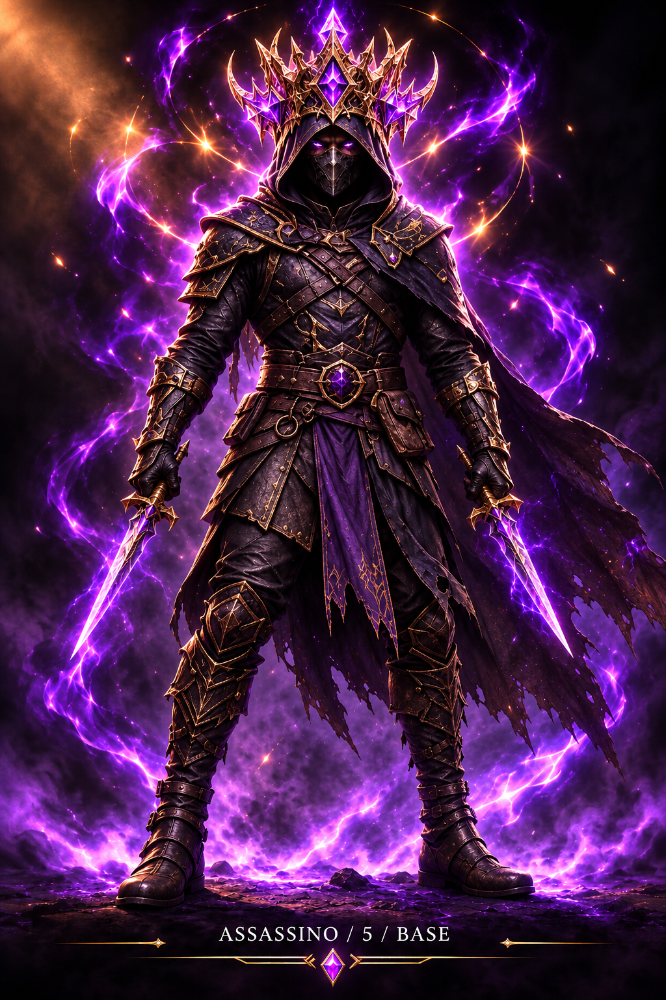
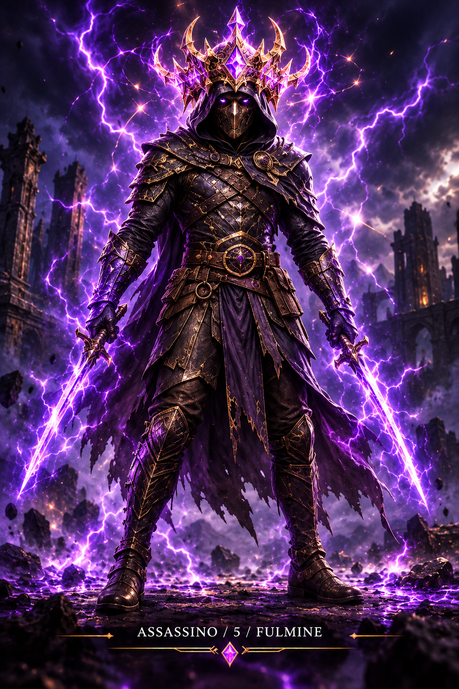
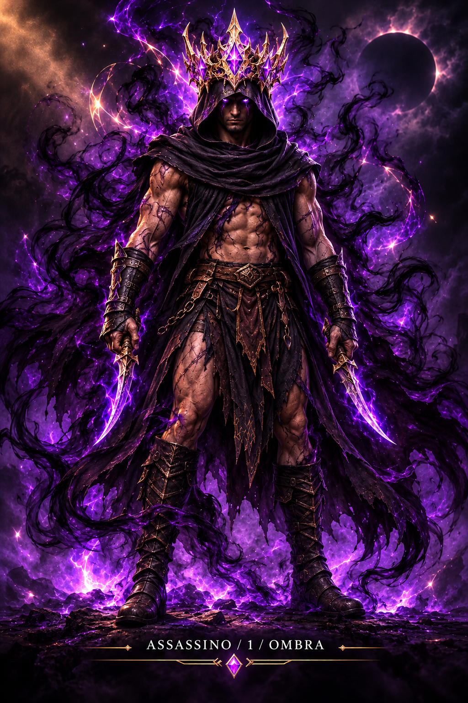
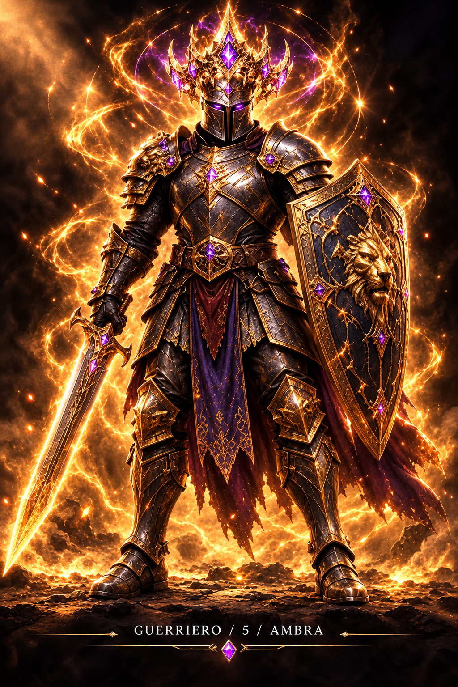
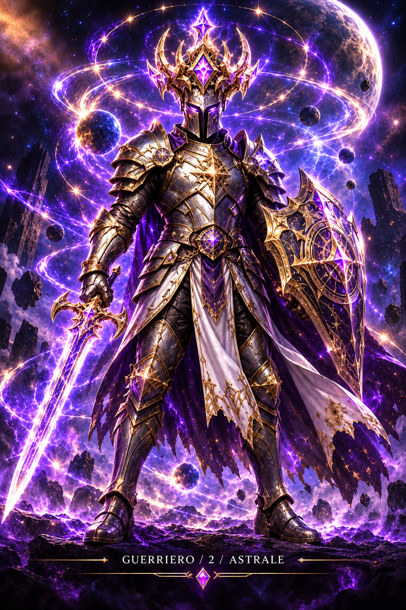
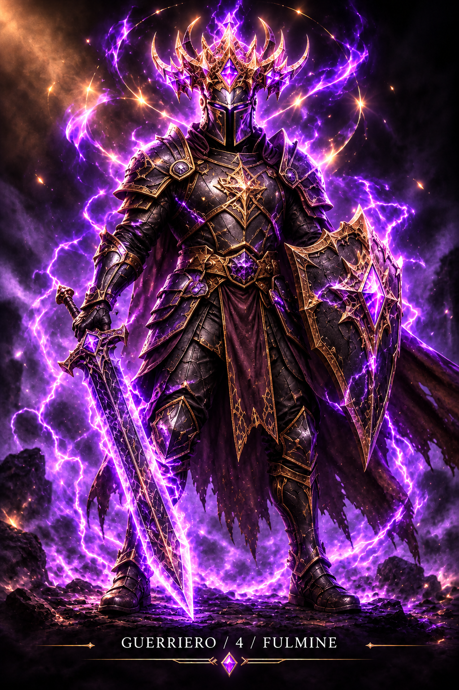
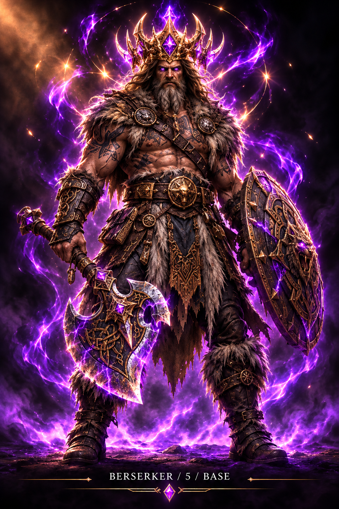
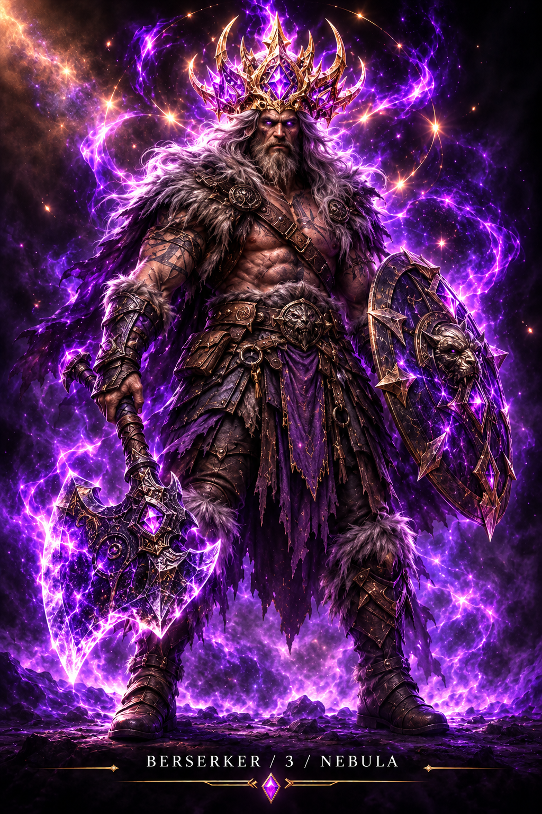
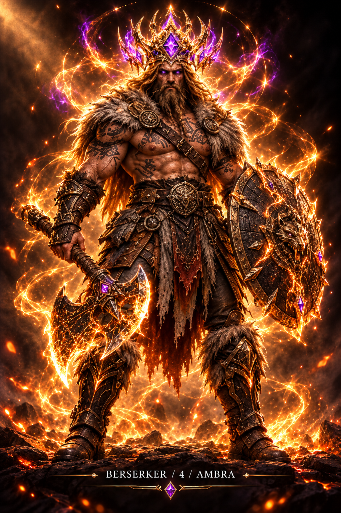

Nove nuove illustrazioni complete, generate con corona, occhi, armi e illuminazione integrati nella scena, non applicati come adesivi. Tocca un'immagine per aprire la versione originale.
Nota: questa è la galleria dei nove concept approvati, non il catalogo completo delle 648 combinazioni. Le immagini etichettate «concept» mostrano armi o dettagli non necessariamente disponibili nella fase di streak indicata: non vengono usate per anticipare ricompense nell'avatar reale. Le fotografie e la progressione della v360 restano intatte.
Torna all'app palestra







